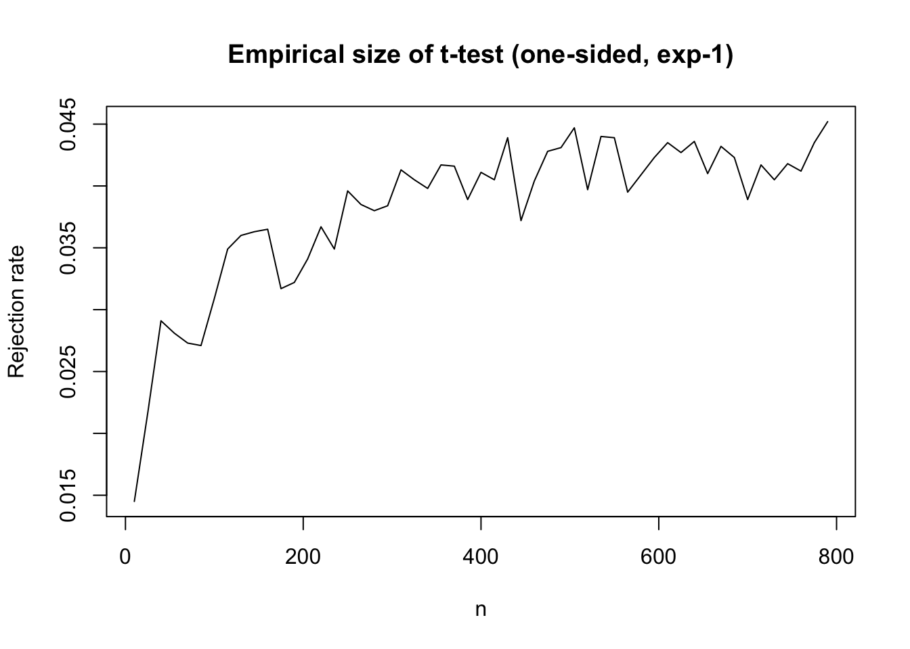

There are many types of hypothesis tests. One such type is the “honest” hypothesis test. This description may conjure an image in your mind. What are “honest” hypothesis tests compared to their regular counterparts? Maybe a hypothesis test is honest if it does not double dip, have some stopping rule, or has well founded assumptions. Honest can mean many things, but its description today will be none of these things. Instead, the modifier “honest” hypothesis tests stems from Li (1989). Its meaning is much more esoteric. The best part is any dishonest test can be made honest with barely any change in assumption.
Preliminaries
We’ll begin with Bahadur and Savage (1956) which stated an impossibility result. Let \(X_1, X_2, \ldots X_n\) be i.i.d. with mean \(\mu\) and variance \(\sigma^2 < \infty\). We do not want to put any other restrictions on the random variables \((X_n)\) when we do statistical inference. So we consider a broad class of distributions \(\mathcal{P}\), whose restriction is that random variables have finite variance. Our null hypothesis will be \(\mathcal{P}_0 \subset \mathcal{P}\) where \(\mathcal{P}_0 \equiv \{\mathsf P : \mathbb{E}_{\mathsf P}(X) = \mu_0\}\) for some fixed \(\mu_0\). We don’t have any knowledge of their likelihoods and we are restricting ourselves to this broad set of distributions. Perhaps the only thing we can possibly do is appeal to asymptotics. We have a finite second moment after all… We recall the central limit theorem (CLT), which says that \(\forall \mathsf P \in \mathcal{P}\),
We hope \(n\) is large enough that the LHS is approximately the RHS. We still don’t know the variance \(\sigma^2\) which indicates our use of a t-test.1 We’ll define our test \(\phi_n\) to be
We can check this empirically, for instance, when \(Z_n \sim {\rm Exp}(1) -1\).
max_n <-8e2ns <-seq(10, max_n, by =15)res <-sapply(ns, \(n) {mean(replicate(1e4, { z <-rexp(n) -1sqrt(n) *mean(z) /sd(z) >qt(0.95, n -1) }))})plot(ns, res, type ="l",xlab ="n", ylab ="Rejection rate",main ="Empirical size of t-test (one-sided, exp-1)")abline(h =0.05, col ="red", lty =2)

While the exponential distribution is a nice \(\mathsf P\), which lies in our large class \(\mathcal{P}\), so are other more adversarial \(\mathsf P\). There are two distinct ways in which \(\mathcal{P}\) contains adversarial subsets of distributions. The first way to fail being an honest test is that we must not allow distributions that if nudged a little, will fail to have a second moment. The second way to fail is that we must be more precise in what we mean by finite second moments. I will give counterexamples for each adversarial family \((\mathsf P_m)_{m \in \mathbb{N}}\).
Failure 1: A Robust Finite Second Moment
Our first counter example is a more familiar one. Let \(\mathsf P_m\) be defined so that \[
\mathsf P_m (X = m) = \frac{1}{m^2} \quad \mathsf P_m(X = -m) = \frac{1}{m^2} \quad \mathsf P_m(X = 0) = 1 - \frac{2}{m^2}.
\] Observe two facts about this distribution. First \(\mathbb{E}_{\mathsf P_m}(X) = 0\). Second, \(\exists B < \infty\) so that \(\mathbb{E}_{\mathsf P_m}(X^2) < B\). This \(B\) you can check is \(2\). In words, the distribution has mean \(0\) and also has uniformly bounded second moments. (The uniformity will be the second counter example). Despite these facts, this family \((\mathsf P_m)_{m \in \mathbb{N}}\) is not sufficiently well behaved to have a uniform CLT.
The way I think about this failure mode is that we don’t have rates. One may recall that the mean estimator \(\frac{S_n}{n} \to \mu, \mathsf P\)-a.s. if and only if \(\mathbb{E}(X) = \mu < \infty\). However, we only get rates for how fast this convergence occurs if we assume a \(1+\delta\) moment. This is the exact problem with \((\mathsf P_m)_{m \in \mathbb{N}}\). If we nudge the moment calculation a bit \(\delta > 0\), then it blows up to \(\infty\). One can rigorously show the lack of convergence, but I will not here.
Failure 2: Precisely Stating Bounded 2nd Moments
For this failure mode, the key counterexample to have in mind is the following. Let \(\mathsf P_c\) be a symmetric standard Cauchy distribution. We know that if \(X \sim \mathsf P_c, \mathbb{E}_{\mathsf P_c}(|X|) = \infty\). Then for each \(m \in \mathbb{N}\) consider a truncated Cauchy distribution \[
\mathsf P_{c,m} \propto \mathsf P_{c} 1(|x| < m).
\] We’ve truncated the distribution, which implies that \(\forall m \in \mathbb{N}, \mathsf P_{c,m}\) has a finite MGF and thus finite exponential moment. Moreover, it has mean \(0\) due to symmetry. However, it is not true in the limit as \(m \to \infty\). This is because \(\lim_{m \to \infty} \mathsf P_{c,m} = \mathsf P_{c}\), which we know does not have any finite moments.
Uniform Integrability
I’ve given you two failure modes of badly behaved distributions. For either counterexample, we can analyze how they succeed pointwise but fail uniformly. I claim the following still holds
\[
\sup_{m \in \mathbb{N}} \limsup_{n \to \infty} \mathbb{E}_{\mathsf P_{c,m}}(\phi_n) \leq \alpha,
\] so nothing is wrong. If I fix my distribution \(\mathsf P_m\) beforehand and then look at larger and larger datasets, my test will be correct. This statement is true because of the CLT.
However, let me first consider larger and larger datasets. Then for each large dataset, I am free to assume \(X_1, \ldots, X_n \sim \mathsf P_{c,m}\) for any \(m \in \mathbb{N}\). I can let \(m\) be dependent on \(n\). For this example, the assumptions are too weak for a uniform limit. We will end up with
In fact, the power function will evaluate to \(1\). The analyst will always reject erroneously.
This is an example of the importance of Uniform Integrability (u.i.) commonly covered in probability theory courses. The problem is that if \(X_m \sim \mathsf P_{c,m}\), then
There are many conditions for uniform integrability to hold. The most common one to check simply forbids both failure modes. We must assume uniformly bounded \(p + \delta\) moments if we are analyzing the \(p\)-th moment. It is sometimes called the “Crystal Ball” condition. The condition asks that if we want the \(p\)-th moment to be uniformly integrable then for \(k >p\), \[
\sup_{\mathsf P \in \mathcal{P}} \mathbb{E}_{\mathsf P}(|X|^k) \leq B < \infty.
\] If we make this additional assumption (with \(p = 2\)), all problems go away. We can write \[
\limsup_{n \to \infty}\sup_{\mathsf P \in \mathcal{P}} \mathbb{E}_{\mathsf P}(\phi_n) \leq \alpha.
\] This uniform-over-distributions size control is the definition of an honest test. With a small change of assumption, we make our test honest.
What is Going on Here?
Why did I spend weeks during a probability theory class to cover the situation of uniform integrability? The assumptions in which one gets an “honest” test are so similar to the assumptions one fails to obtain one.
I think one lesson is to be precise in your mathematical assumptions. There is a big difference between uniform boundedness and regular boundedness. In your head, you’re probably assuming uniform boundedness, but you have to state that precisely.
This same lesson applies to assuming a second moment and assuming an infinitesimally larger than 2 moment. It is easy to write down all distributions with finite second moment, but in your head you don’t want the counter-example distributions in this class you’re constructing.
This first lesson is for the theoretical minded people, but is there any practical use? Is this either 1) a fun mathematical exercise for theoretical statisticians to check when devising methods or 2) is it something to add (perhaps near the top) to the million other things a statistician should check when doing a real data analysis.
At first I thought it was only option 1: be precise in your assumptions. Nobody constructing a confidence interval in R should worry about an adversarial \((\mathsf P_{m})_{m \in \mathbb{N}}\) messing up their analysis. But I think it is important in real world data analysis too. I’ll try to convince you and also convince myself the real world use of getting trained in theoretical statistics.
Usefulness of the Knowledge of Fragility
The answer to “does this matter” in the real world is a resounding yes. The tiniest change in assumption makes the problem go away and it’s an assumption nobody will fight you on. So why do I think it is something to think about when doing statistics?
When we talk about \(\sup\) and \(\lim\) and integrals, the problems become very abstract. However, what is real when you’re staring at a dataset you’ve analyzed or built some model on. You don’t care about this dataset, you care about future datasets or other datasets you may have collected. In other words, you should care about how a new observation can come in. You should interrogate how sensitive is your analysis to tails? The biggest problem with tails is you don’t know where they are until they are there. How sensitive is your analysis to small changes in assumptions? If it is, then the analysis is surely not very robust.
Maybe after 10,000 days into using AI agents we can be confident that chatbots are not an adversary. But you never know2! Bad events can be hiding in the tails of the distribution. Even if the distribution is behaved enough to allow a CLT.
References
Bahadur, R. R., and Leonard J. Savage. 1956. “The Nonexistence of Certain Statistical Procedures in Nonparametric Problems.”The Annals of Mathematical Statistics 27 (4): 1115–22. https://www.jstor.org/stable/2237199.
Li, Ker-Chau. 1989. “Honest Confidence Regions for Nonparametric Regression.”The Annals of Statistics 17 (3): 1001–8. https://doi.org/10.1214/aos/1176347253.
MacKenzie, Donald, and Taylor Spears. 2014. “‘The Formula That Killed Wall Street’: The Gaussian Copula and Modelling Practices in Investment Banking.”Social Studies of Science 44 (3): 393417.
Footnotes
If \(n\) is large \(t,z\) will give you the same answer anyway↩︎
A good example of tail events causing havoc is the use of the Gaussian copula in the 2008 financial crisis MacKenzie and Spears (2014).↩︎